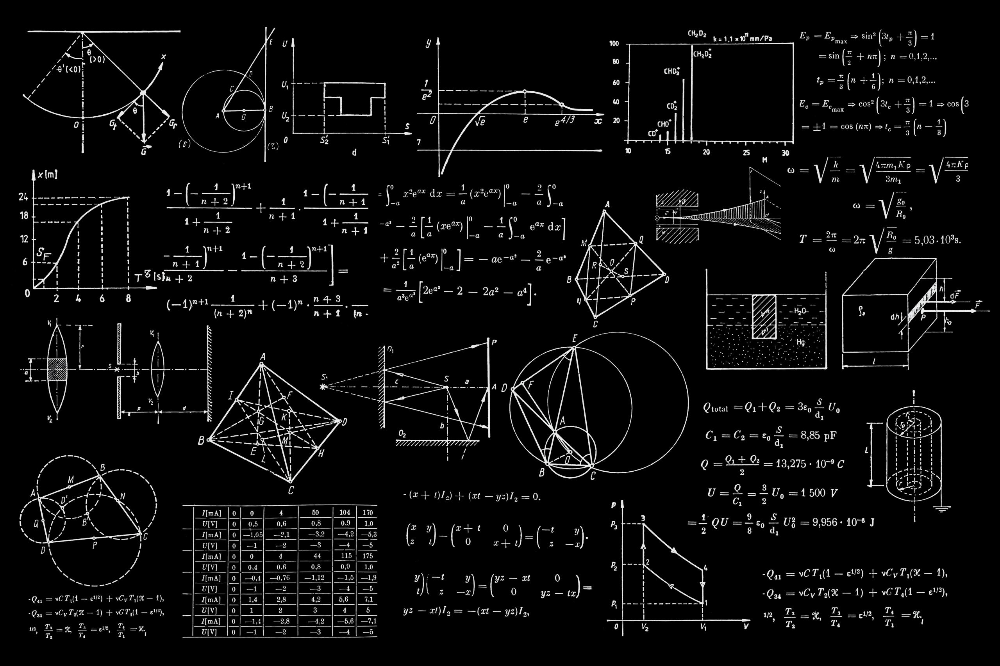

Nuevos estudios
Aprender nuevos conocimientos.
Me estoy enfocando en la adquisición de conocimeintos en general que me ayudarán en el futuro, por tanto, es necesario mejorar la disciplina que poseo para alcanzarlo.

Foto
Idiomas
Voy a aprender nuevos idiomas para que mi comunicación con los demás sea más fácil y fluida, y así poder compartir conocimientos y experiencias de una manera más óptima.
Los idiomas primordiales que aprenderé son: las lenguas romances como el Italiano, Francés y Portugués, además del Japonés, Ruso y Coreano.
Foto

Lectura
La lectura será uno de mis mejores hábitos de vida.
Me voy enamorar de los libros de aventura, de ciencia ficción, de filosofía y teología, de todos los que me enseñen a vivir de una manera más plena.
Foto

Pintura
La pintura en óleo será uno de mis hobbies.
A través del dibujo y la pintura voy a transmitir ideas sobre mis pensamientos y sobre lo que me rodea, de cómo persivo el mundo.
Foto

Ciencias exactas
Profundizaré sobre las ciencias exactas como las Matemáticas y Física, además de la Geometría, y tal vez aprenderé algo de Estadística.
Foto

Viajes
Conocer nuevos sitios y culturas será lo mejor.
Aprenderé de su historia, cómo son las personas que viven en esos países, aprenderé cómo es su calidad de vida, veré sus infraestructuas y porqué se distinguen a los demás sitios.
Foto

Instrumentos
Aprenderé a tocar instrumentos músicales como lo son: la guitarra, la guitarra eléctrica, la flauta, el piano, la batería y el redoblante.
Foto